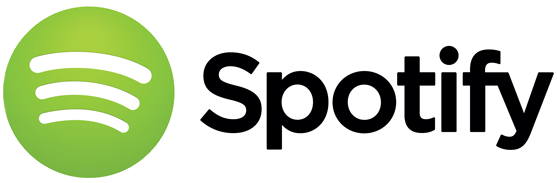

spotify
Spotify est un service suédois de streaming musical sous la forme d'un logiciel propriétaire et d'un site web. Cette plateforme de distribution numérique permet une écoute quasi instantanée de fichiers musicaux. Le catalogue peut être parcouru par artiste ou par album, et également grâce à une fonctionnalité de liste de lecture personnalisée. Le service est disponible gratuitement avec des coupures publicitaires entre les morceaux, la version Premium permet d'écouter les morceaux hors-ligne et enlève les publicités. Une application est disponible pour Windows, MacOS, certaines distributions Linux, iOS, Android, PlayStation 3, 4, 5, Xbox One et Xbox series X,S ainsi que dans la plupart des navigateurs web. D'autres objets connectés permettent également d'utiliser l'application (enceintes, télévisions, montres intelligentes, assistants vocaux...).

histoire
Spotify est un logiciel développé depuis 2006 par l'équipe Spotify AB basée à Stockholm en Suède. L'entreprise fut fondée par Daniel Ek, ancien directeur technique de Stardoll, et Martin Lorentzon, cofondateur de TradeDoubler. Le siège social est basé à Stockholm. Spotify est lancé pour un accès public le 7 octobre 2008. Le 4 mars 2009, Spotify annonce que des données personnelles incluant les adresses électroniques et les dates de naissance des membres du service inscrits avant le 19 décembre 2008 sont « potentiellement menacées » par des hackers exploitant un bug dans le système
Identité visuelle
de 2008 à 2012.
variante du premier logo.- 
de 2013 à 2015 
depuis 2015